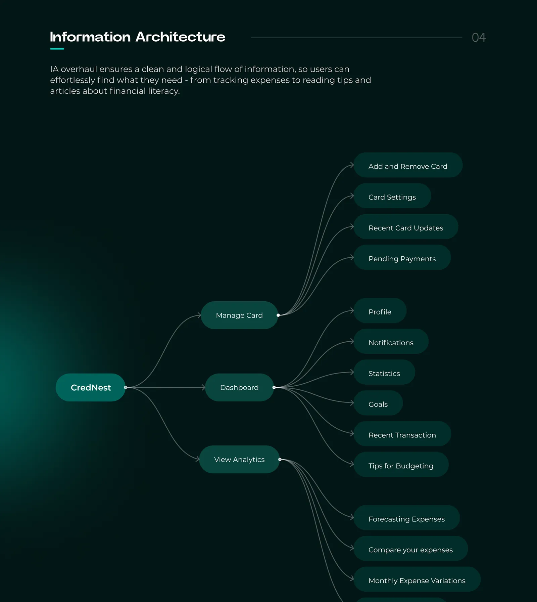

International students often struggle to manage their money, especially credit cards. Budgeting, tracking expenses and understanding credit scores are all hard when you’re new.
Research
Five feelings kept coming up.
We ran surveys and in-depth interviews using the Critical Incident Technique, focusing on specific moments that shaped how students handle money.
Fear
Stress when looking at their total expenses.
Confusion
About credit score maths and credit card terms.
Overwhelm
From juggling several accounts at once.
Insecurity
About making a money mistake, especially with credit.
Curiosity
A real wish to learn how it all works.
Personas
From notes to two people.
An affinity diagram sorted the interview notes into interests, pain points, motivations, goals, needs and influences.
That became two personas: a graduate who needs to understand credit cards in Canada, and an undergraduate who wants to track spending and see how it hits his credit score.
Structure
Three jobs: manage cards, see the dashboard, view analytics.
The information architecture came first. Low-fi wireframes went in front of a small group of users for feedback before any visual design.

Design system
Deep green, Montserrat and Noto Sans.
Montserrat for headings, Noto Sans for body text, and a four-step green palette used across every screen.
CredNestMontserrat headings, 30 and 18px
Your spending this monthNoto Sans body text, 16, 14 and 12px
Background #001312
Primary #012D29
Secondary #00635B
Tertiary #01D1BF
Two typefaces: one for headings, one for reading
Five text sizes in all
Four greens, from near-black to bright teal
From the CredNest style guide. Secondary and tertiary are read from its swatches.